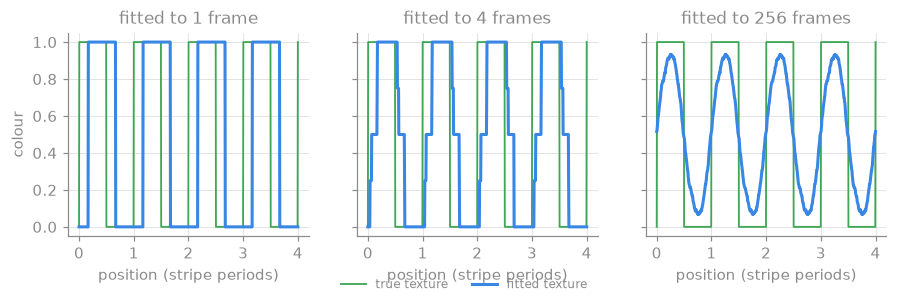
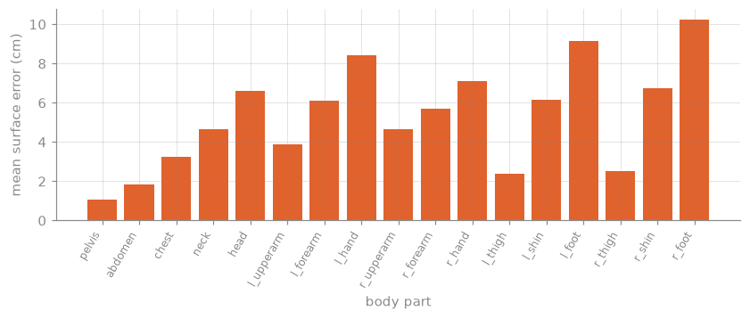
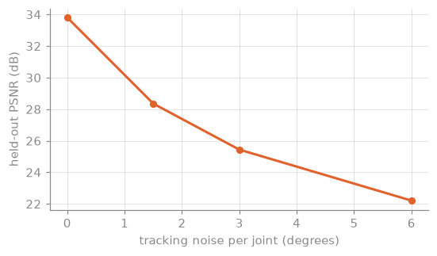
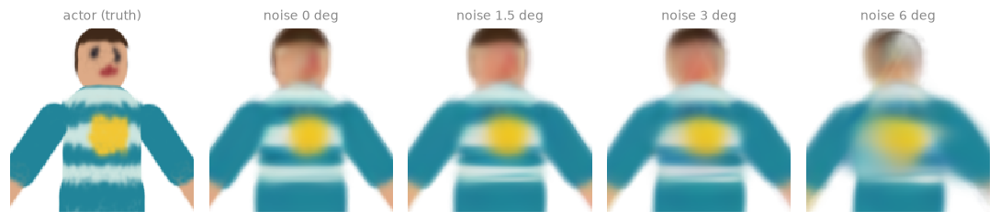
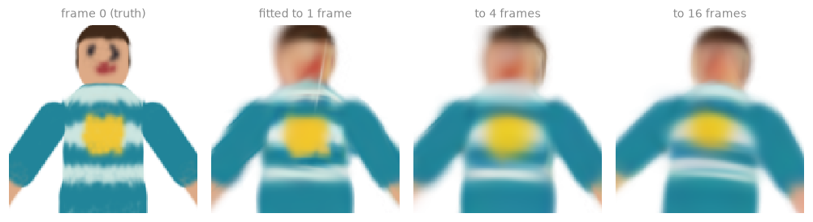
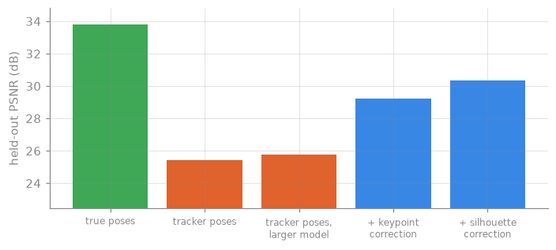
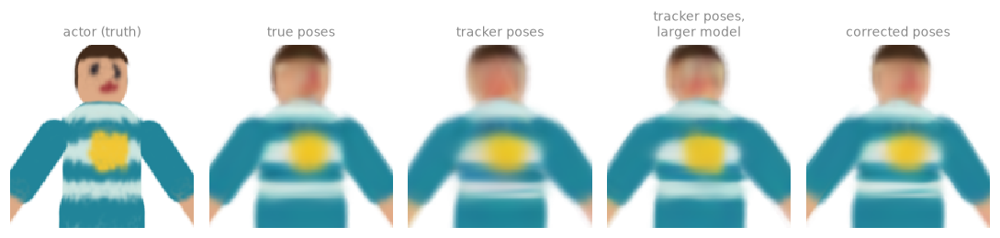
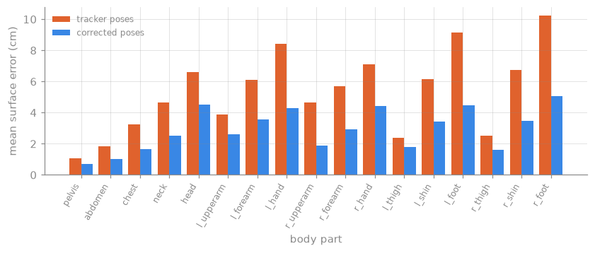

Why avatars are blurry: the frames disagree#
What you will learn
Why a texture fitted to many frames is blurred when the frames disagree about where the surface is, and how to predict the amount of blur.
How to show it: quality against tracking noise, and one frame against a few against all.
Why more capacity (texture resolution, Gaussians) does not buy the detail back, and fixing the registration does.
How to correct each frame’s pose from silhouettes and 2D keypoints alone, and what that cannot recover.
Prerequisites: Lesson 5a. This lesson carries the main finding of the project the course is built on.
1. A texture is an average#
Lesson 5a fitted one texture to all frames, with the true pose of every frame. A real pipeline does not have true poses. It has a tracker’s estimates, and each estimate is a little wrong, in a different way in every frame.
Think about what that does to one texel, say one on a stripe of the shirt. In frame 1 the believed pose puts the texel a centimetre too high in the image, so it lands on the pale stripe. In frame 2 it is a centimetre too low and lands on the dark one. The fit must choose one colour for the texel that serves all frames, and the choice that minimises the loss is a compromise between what the frames ask for. Over many frames the texel learns the average colour of its neighbourhood. An average over a neighbourhood is a blur.
This can be made exact in one dimension. Let the true texture be \(c(x)\), and let frame \(t\) see it shifted by an error \(e_t\). The least-squares texture is the mean of the shifted copies,
the true texture convolved with the distribution \(p\) of the errors. If the errors are Gaussian with standard deviation \(s\), a stripe pattern of period \(\lambda\) keeps only a fraction
of its contrast. Detail of period \(\lambda\) is nearly gone once \(s\) reaches about \(\lambda / 3\).
x = torch.linspace(0, 4, 800) # four periods of a stripe pattern, period 1
stripes = (torch.sin(2 * math.pi * x) > 0).float()
s = 0.15 # registration error, in periods
shifts = s * cu.randn(256, generator=cu.generator(0))
shifted = torch.stack([(torch.sin(2 * math.pi * (x + e)) > 0).float() for e in shifts])
fig, axes = plt.subplots(1, 3, figsize=(9.6, 2.4), sharey=True)
for ax, n in zip(axes, (1, 4, 256)):
ax.plot(cu.to_np(x), cu.to_np(stripes), color=cu.COLORS["truth"], lw=1.2, label="true texture")
ax.plot(cu.to_np(x), cu.to_np(shifted[:n].mean(0)), color=cu.COLORS["gaussian"], label="fitted texture")
ax.set_title(f"fitted to {n} frame{'s' if n > 1 else ''}"); ax.set_xlabel("position (stripe periods)")
axes[0].set_ylabel("colour")
fig.legend(*axes[0].get_legend_handles_labels(), loc="lower center", ncol=2, fontsize=8, bbox_to_anchor=(0.5, -0.14))
wave = torch.stack([torch.sin(2 * math.pi * (x + e)) for e in shifts]).mean(0) # a pure sinusoid, to test the formula
measured = float(wave.abs().max())
predicted = math.exp(-2 * math.pi ** 2 * s ** 2)
print(f"contrast kept by a sinusoid at s = {s} periods: measured {measured:.2f}, predicted {predicted:.2f}")
assert abs(measured - predicted) < 0.08
contrast kept by a sinusoid at s = 0.15 periods: measured 0.68, predicted 0.64

Read the three panels from left to right, because the whole lesson is in them.
One frame. The fitted texture is perfectly sharp. It is in the wrong place, but nothing contradicts it.
A few frames. The copies disagree and the edges turn into steps.
Many frames. The steps merge into a smooth ramp. The stripes are still there, at a fraction of their contrast.
So misregistration does not make a single frame’s fit worse. It makes the frames disagree, and the blur is what agreement costs. The rest of the lesson shows the same thing on the avatar, and then what can be done.
Eight frames see the same striped patch, each placed with a small pose error. One texture has to explain all of them, so it becomes their average and the stripes lose most of their contrast. With one frame the texture is sharp, and when the poses are corrected the frames agree and the detail returns.
Explore it in 3D
2. How large is the disagreement?#
Tracking error is an error in joint angles. What blurs the texture is an error in surface position. The two are connected by a lever arm: a rotation error \(\delta\) (in radians) at a joint moves a point at distance \(r\) from the joint by about \(r\,\delta\), and the errors of all joints between the root and the point add up.
cu.perturb_poses(poses, sigma_deg) imitates a tracker by adding independent noise to every joint rotation in
every frame. tracking.surface_error measures the result where it matters: the distance between each
Gaussian’s position under the believed pose and under the true pose.
actor = cu.ToyActor()
poses, trans = cu.motion("turn", 32)
video = cu.make_video(actor, poses, trans, size=64)
train, held_out = video.subset(range(0, 32, 2)), video.subset(range(1, 32, 2))
make_avatar = lambda **kw: cu.ShellAvatar(offsets=(0.0, 0.03), **kw) # a light avatar: this lesson fits many
ruler = make_avatar() # used only to measure surface positions
SIGMA = 3.0
noisy = cu.perturb_poses(train.poses, SIGMA, seed=1)
def part_error(believed, cams=None):
d = tracking.surface_error(ruler, believed, train.trans, train.poses, cams=cams, per_gaussian=True).mean(0)
return torch.stack([d[ruler.part == p].mean() for p in range(cu.N_PARTS)])
err_cm, err_px = 100 * part_error(noisy), part_error(noisy, train.cams)
fig, ax = plt.subplots(figsize=(9.0, 2.8))
ax.bar(range(cu.N_PARTS), cu.to_np(err_cm), color=cu.COLORS["error"])
ax.set_xticks(range(cu.N_PARTS), cu.PART_NAMES, rotation=60, ha="right", fontsize=8)
ax.set_ylabel("mean surface error (cm)"); ax.set_xlabel("body part")
pix_cm = 100 * 2 * 4.2 * math.tan(math.radians(14)) / 64
all_cm = 100 * float(tracking.surface_error(ruler, noisy, train.trans, train.poses).mean())
all_px = float(tracking.surface_error(ruler, noisy, train.trans, train.poses, cams=train.cams).mean())
print(f"joint noise {SIGMA:.0f} degrees -> mean surface error {all_cm:.1f} cm in 3D, {all_px:.2f} px in the image "
f"(one pixel is about {pix_cm:.1f} cm here)")
idx = cu.part_index
assert err_cm[idx("l_hand")] > 2 * err_cm[idx("pelvis")] and err_cm[idx("l_foot")] > 2 * err_cm[idx("pelvis")]
joint noise 3 degrees -> mean surface error 4.0 cm in 3D, 0.90 px in the image (one pixel is about 3.3 cm here)

Three degrees per joint sounds small. At the end of a chain of joints it is several centimetres: the hands, feet and head move most, the pelvis least. The stripes on the toy shirt are a few centimetres wide, and the eyes are smaller than that. By the rule of Section 1 we should expect to lose them.
3. Quality against tracking noise#
Fit the same avatar to the same video four times, with believed poses of increasing noise. Each avatar is then scored on the held-out frames with their true poses. Only a toy allows that: it separates the quality of the learned texture from the error of the pose used to render it.
ITERS = 80
def fit_and_score(believed, video=train, **kw):
model = make_avatar(**kw)
cu.fit(model, video, iters=ITERS, poses=believed)
return model, cu.evaluate(model, held_out)["mean_psnr"]
sigmas = (0.0, 1.5, 3.0, 6.0)
sweep, t0 = {}, time.perf_counter()
for sg in sigmas:
believed = cu.perturb_poses(train.poses, sg, seed=1)
sweep[sg] = fit_and_score(believed) + (float(tracking.surface_error(ruler, believed, train.trans, train.poses, cams=train.cams).mean()),)
print(f"joint noise {sg:3.1f} deg | surface error {sweep[sg][2]:.2f} px | held-out PSNR {sweep[sg][1]:.2f} dB")
print(f"four fits in {time.perf_counter() - t0:.0f} s")
fig, ax = plt.subplots(figsize=(5.6, 3.0))
ax.plot(sigmas, [sweep[sg][1] for sg in sigmas], marker="o", color=cu.COLORS["error"])
ax.set_xlabel("tracking noise per joint (degrees)"); ax.set_ylabel("held-out PSNR (dB)")
quality = [sweep[sg][1] for sg in sigmas]
assert all(a > b + 1.0 for a, b in zip(quality, quality[1:])), "quality should fall steadily with tracking noise"
clean_model, clean_psnr = sweep[0.0][:2]
noisy_model, noisy_psnr = sweep[SIGMA][:2]
joint noise 0.0 deg | surface error 0.00 px | held-out PSNR 33.81 dB
joint noise 1.5 deg | surface error 0.45 px | held-out PSNR 28.35 dB
joint noise 3.0 deg | surface error 0.90 px | held-out PSNR 25.44 dB
joint noise 6.0 deg | surface error 1.78 px | held-out PSNR 22.21 dB
four fits in 6 s

Quality falls steeply and keeps falling. The first step is the most expensive: an error well below one pixel on average already costs several decibels. Here is what the loss looks like. The camera below is the training camera, zoomed on the chest and head of one held-out frame.
zoom_cam = held_out.cams[0].crop(20, 5, 24, 24, zoom=6) # a 24 px window, rendered at 144 px
def zoom(model, pose=None, tr=None):
pose = held_out.poses[0] if pose is None else pose
with torch.no_grad():
return model.render(zoom_cam, pose, held_out.trans[0] if tr is None else tr)[0]
truth_zoom = actor.render(zoom_cam, held_out.poses[0], held_out.trans[0])[0]
cu.show_images([truth_zoom] + [zoom(sweep[sg][0]) for sg in sigmas],
["actor (truth)"] + [f"noise {sg:g} deg" for sg in sigmas], size=2.0);

With true poses the fit shows the stripes, the logo and a hint of a face (the head is only about six pixels wide in the training video, so even the best fit has little to work with). As the noise grows, the stripes fade into a flat colour, the logo spreads, and the face disappears first because its features are the smallest. The outline goes soft as well: the opacity texture is averaged in the same way as the colour texture.
4. One frame, a few frames, all frames#
Section 1 predicted that a single frame is sharp even with a wrong pose. Test it. We fit to 1, 4 and 16 of the noisy training frames and look at training frame 0, rendered in the pose the fit believed for it.
frame0 = train.subset([0])
crop0 = train.cams[0].crop(20, 5, 24, 24, zoom=6)
by_count, shots = {}, []
for n in (1, 4, 16):
idx = list(range(0, 16, 16 // n))
model = noisy_model if n == 16 else fit_and_score(noisy[idx], video=train.subset(idx))[0]
by_count[n] = cu.evaluate(model, frame0, poses=noisy[[0]])["mean_psnr"]
with torch.no_grad():
shots.append(model.render(crop0, noisy[0], train.trans[0])[0])
print(f"fitted to {n:2d} noisy frame{'s' if n > 1 else ' '}: PSNR on frame 0 {by_count[n]:.2f} dB")
cu.show_images([actor.render(crop0, train.poses[0], train.trans[0])[0]] + shots,
["frame 0 (truth)", "fitted to 1 frame", "to 4 frames", "to 16 frames"], size=2.3);
assert by_count[1] > by_count[4] + 2.0 and by_count[4] > by_count[16] + 1.0
fitted to 1 noisy frame : PSNR on frame 0 30.42 dB
fitted to 4 noisy frames: PSNR on frame 0 24.23 dB
fitted to 16 noisy frames: PSNR on frame 0 21.18 dB

The same noisy pose, the same model, the same number of steps. Fitted to one frame, the avatar reproduces that frame far more sharply, stripes and all. Add three more frames and the picture softens. With all sixteen it is the blur of Section 3. Nothing about frame 0 changed between the three fits. What changed is how many other frames it had to agree with.
Do not conclude that one frame is the better avatar. A one-frame model is sharp from one direction and knows nothing about the rest of the body. The comparison is a diagnostic. It says the representation can hold the detail, so the detail is being lost in the agreement between frames.
5. Does more capacity buy it back?#
A blurry result invites an obvious response: the model must be too small. Give it a texture with twice the resolution in each direction and twice the Gaussians, keep the noisy poses, and fit again.
big_model, big_psnr = fit_and_score(noisy, tex_res=(24, 32), density=1800.0)
print(f"noisy poses, default capacity: {noisy_psnr:.2f} dB ({noisy_model.texture.numel()} texture numbers, {noisy_model.n_gaussians} Gaussians)")
print(f"noisy poses, larger model: {big_psnr:.2f} dB ({big_model.texture.numel()} texture numbers, {big_model.n_gaussians} Gaussians)")
print(f"true poses, default capacity: {clean_psnr:.2f} dB")
assert big_psnr - noisy_psnr < 0.35 * (clean_psnr - noisy_psnr), "capacity should not close the gap"
noisy poses, default capacity: 25.44 dB (45696 texture numbers, 4654 Gaussians)
noisy poses, larger model: 25.77 dB (182784 texture numbers, 9372 Gaussians)
true poses, default capacity: 33.81 dB
Four times the texture and twice the Gaussians move the score by a small fraction of the gap to the fit with true poses. This follows from Section 1. The fitted texture is the true one convolved with the error distribution. A finer grid of texels stores that blurred function more accurately, and it is still the blurred function. The information about fine detail was destroyed by the averaging before it reached the texture. In Lesson 4b, with exact poses, both knobs helped. Capacity is worth exactly as much as the registration lets it be.
6. Fixing the registration#
If the frames disagree because the poses are wrong, correct the poses. The correction must not use colour. If it did, the pose of a frame would be tuned to make this texture look right in this frame, the texture would then be refitted to those poses, and errors could hide in the loop between the two. Worse, a held-out frame corrected with its own colours is no longer held out. So the correction uses two signals that say where the body is and nothing about what it looks like:
2D keypoints \(k_{tj}\): where a detector saw joint \(j\) in frame \(t\);
the silhouette \(m_t\): the mask of the person.
For every frame we look for a small change \(\delta_t\) of the pose (one rotation vector per joint) that minimises
Here \(J_j(\theta)\) is the 3D position of joint \(j\) from forward kinematics, \(\pi\) is the camera projection, \(W\) is the image width, and \(\alpha(\theta)\) is the alpha image of the avatar rendered in pose \(\theta\). The avatar’s texture is held fixed. The last term keeps \(\delta_t\) at zero unless the data ask for a change. Both data terms are differentiable in the pose: the keypoint term through forward kinematics, the silhouette term through skinning and the renderer.
The keypoint term for one frame, written out:
def keypoint_loss(pose, tr, cam, keypoints):
_, joints = cu.forward_kinematics(pose, tr) # (J, 3) joint positions in the world
projected, _ = cam.project(joints) # (J, 2) pixels
return (projected - keypoints).norm(dim=-1).mean() / cam.width
t = 3
ours = keypoint_loss(noisy[t], train.trans[t], train.cams[t], train.keypoints[t])
lib = tracking.keypoint_residual(noisy[t], train.trans[t], train.cams[t], train.keypoints[t]).mean() / 64
at_truth = keypoint_loss(train.poses[t], train.trans[t], train.cams[t], train.keypoints[t])
print(f"keypoint loss of frame {t}: {float(ours):.4f} at the believed pose (library: {float(lib):.4f}), {float(at_truth):.1e} at the true pose")
assert abs(float(ours - lib)) < 1e-5 and float(at_truth) < 1e-5
keypoint loss of frame 3: 0.0165 at the believed pose (library: 0.0165), 0.0e+00 at the true pose
A real detector is not exact, so we do not hand the correction exact keypoints. We add half a pixel of noise to each one, which is about a centimetre and a half on the body.
6.1 Round one: keypoints#
tracking.refine_poses optimises all \(\delta_t\) with Adam. With the silhouette term switched off it never
renders anything, so it takes about a second.
detected = tracking.noisy_keypoints(train.keypoints, 0.5, seed=2)
def registration(believed):
"""Mean surface error in cm (3D) and in pixels (in the image)."""
cm = 100 * float(tracking.surface_error(ruler, believed, train.trans, train.poses).mean())
px = float(tracking.surface_error(ruler, believed, train.trans, train.poses, cams=train.cams).mean())
return cm, px
poses_kp, _, hist_kp = tracking.refine_poses(noisy_model, train, noisy, keypoints=detected, w_sil=0.0, iters=80, lr=0.005)
kp_model, kp_psnr = fit_and_score(poses_kp)
print(f"tracker poses: surface error {registration(noisy)[0]:.2f} cm, {registration(noisy)[1]:.2f} px | refit {noisy_psnr:.2f} dB")
print(f"after keypoint round: surface error {registration(poses_kp)[0]:.2f} cm, {registration(poses_kp)[1]:.2f} px | refit {kp_psnr:.2f} dB ({hist_kp['seconds']:.1f} s)")
assert registration(poses_kp)[1] < 0.8 * registration(noisy)[1] and kp_psnr > noisy_psnr + 1.5
tracker poses: surface error 4.02 cm, 0.90 px | refit 25.44 dB
after keypoint round: surface error 2.82 cm, 0.41 px | refit 29.22 dB (2.7 s)
6.2 Round two: silhouettes#
The silhouette term needs an avatar to render. The avatar fitted with the tracker’s poses has a blurred outline, which is a poor reference. The avatar we just refitted with the keypoint-corrected poses is sharper, so we use that one, then refit once more. This alternation, fit, correct, refit, is the structure of the real pipeline too.
poses_sil, _, hist_sil = tracking.refine_poses(kp_model, train, poses_kp, keypoints=detected, iters=20, lr=0.003)
final_model, final_psnr = fit_and_score(poses_sil)
print(f"silhouette loss {hist_sil['sil'][0]:.4f} -> {hist_sil['sil'][-1]:.4f} in {hist_sil['seconds']:.0f} s")
print(f"after silhouette round: surface error {registration(poses_sil)[0]:.2f} cm, {registration(poses_sil)[1]:.2f} px | refit {final_psnr:.2f} dB")
arms = [("true poses", clean_psnr, "truth"), ("tracker poses", noisy_psnr, "error"), ("tracker poses,\nlarger model", big_psnr, "error"),
("+ keypoint\ncorrection", kp_psnr, "gaussian"), ("+ silhouette\ncorrection", final_psnr, "gaussian")]
fig, ax = plt.subplots(figsize=(7.4, 3.0))
ax.bar(range(len(arms)), [a[1] for a in arms], color=[cu.COLORS[a[2]] for a in arms])
ax.set_xticks(range(len(arms)), [a[0] for a in arms], fontsize=8); ax.set_ylabel("held-out PSNR (dB)")
ax.set_ylim(min(a[1] for a in arms) - 3, clean_psnr + 1)
recovered = (final_psnr - noisy_psnr) / (clean_psnr - noisy_psnr)
print(f"share of the loss recovered by pose correction: {100 * recovered:.0f} % (larger model: {100 * (big_psnr - noisy_psnr) / (clean_psnr - noisy_psnr):.0f} %)")
assert final_psnr > noisy_psnr + 2.5 and final_psnr > big_psnr + 1.5
assert final_psnr < clean_psnr - 0.5, "correction from noisy 2D evidence should not recover everything"
silhouette loss 0.0152 -> 0.0088 in 3 s
after silhouette round: surface error 2.28 cm, 0.29 px | refit 30.37 dB
share of the loss recovered by pose correction: 59 % (larger model: 4 %)

cu.show_images([truth_zoom, zoom(clean_model), zoom(noisy_model), zoom(big_model), zoom(final_model)],
["actor (truth)", "true poses", "tracker poses", "tracker poses,\nlarger model", "corrected poses"], size=2.0);

Correcting the poses recovers a large share of what the tracking noise cost, using no colour and no extra capacity. The stripes are back, fainter than with true poses. The larger model, on the same noisy poses, recovered almost nothing. This is the result the course is organised around: registration matters more than capacity.
7. What pose correction does not recover#
The corrected avatar is still below the one fitted with true poses, and the face is still a smudge. It is worth being exact about why, because each reason is a limit of the method and not a bug.
after_cm = 100 * part_error(poses_sil)
fig, ax = plt.subplots(figsize=(9.0, 2.8))
w = 0.4
ax.bar(np.arange(cu.N_PARTS) - w / 2, cu.to_np(err_cm), w, color=cu.COLORS["error"], label="tracker poses")
ax.bar(np.arange(cu.N_PARTS) + w / 2, cu.to_np(after_cm), w, color=cu.COLORS["gaussian"], label="corrected poses")
ax.set_xticks(range(cu.N_PARTS), cu.PART_NAMES, rotation=60, ha="right", fontsize=8)
ax.set_ylabel("mean surface error (cm)"); ax.set_xlabel("body part"); ax.legend(fontsize=8)
head = cu.joint_index("head")
twist = lambda p: float(tracking.twist_swing_error_deg(p[:, head], train.poses[:, head], axis=(0.0, 1.0, 0.0))[0].mean())
rot = lambda p: float(tracking.rotation_error_deg(p, train.poses).mean())
exact, _, _ = tracking.refine_poses(noisy_model, train, noisy, w_sil=0.0, iters=80, lr=0.005) # exact keypoints
cm, px = registration(poses_sil)
print(f"1. noisy evidence: surface error with detected keypoints {registration(poses_kp)[0]:.2f} cm, with exact keypoints {registration(exact)[0]:.2f} cm")
print(f"2. depth: remaining error {cm:.2f} cm in 3D, but only {px:.2f} px = {px * pix_cm:.2f} cm in the image")
print(f"3. head turn about its own axis: {twist(noisy):.2f} deg before, {twist(poses_kp):.2f} deg after the keypoint round")
print(f"4. mean joint-angle error: {rot(noisy):.2f} deg before, {rot(poses_sil):.2f} deg after")
assert abs(twist(noisy) - twist(poses_kp)) < 1e-3 and registration(exact)[0] < 0.5 * registration(poses_kp)[0]
assert px * pix_cm < 0.8 * cm and float(after_cm.mean()) < 0.8 * float(err_cm.mean())
1. noisy evidence: surface error with detected keypoints 2.82 cm, with exact keypoints 0.59 cm
2. depth: remaining error 2.28 cm in 3D, but only 0.29 px = 0.96 cm in the image
3. head turn about its own axis: 2.07 deg before, 2.07 deg after the keypoint round
4. mean joint-angle error: 4.83 deg before, 6.00 deg after

Every part is better registered than before, and none is perfect. The four printed lines are four separate reasons.
The correction is only as good as its evidence. With exact keypoints the surface error drops to a small fraction of what the noisy detections achieve. Half a pixel of keypoint noise is itself a registration error of more than a centimetre, and the correction cannot do better than its input. The silhouette helps because it is independent evidence, and it is blunt in its own way: it only sees the outline.
One camera does not see depth. The error that remains is much larger in 3D than in the image. A limb that swings towards the camera barely moves its keypoints or its outline. The frame it came from is explained either way, but the texture is mapped onto the surface in the wrong place, and a different viewpoint will show it.
Some rotations are invisible to both signals. The head turning about its own axis moves no keypoint in our skeleton, which has no joint beyond the head, and hardly changes the outline of a round head. The keypoint round left that error untouched, to the last digit. The face is drawn on exactly that rotation, which is one reason it stays blurred. The same holds for a forearm twisting about its length.
Joint angles are the wrong yardstick. The mean angle error did not improve and may even grow, while the surface error fell. The correction moves the surface to where the evidence says it is, and it is free to do so with a different combination of joint rotations. Judge registration on the surface, in pixels.
A fifth reason does not appear in the toy at all: a real person is not a posed template. Cloth slides, hair moves, skin shades differently as the body turns. No pose, however exact, makes such frames agree. Part 6 and Lesson 7c pick that up.
In the real pipeline#
The first item of “What we learned” in the project’s README is this lesson: “Registration and tracking matter more than capacity, at every stage.”
This lesson |
Real pipeline |
|---|---|
noise added by |
the error of an off-the-shelf tracker on real footage |
|
|
fit, correct, refit |
texture fit (M6), pose correction, refit with the corrections (M7) |
a larger texture and more Gaussians |
benchmark arms with a 512-pixel texture and 300k Gaussians |
The published numbers have the same shape as the bar chart of Section 6. On the benchmark, per-frame pose correction gave +1.04 dB, while “more texture resolution, more Gaussians, extra losses and LR schedules gave nothing”; a rigid correction from silhouettes alone gave part of that gain and the articulated one the rest (RESULTS.md). On phone captures, held-out pose refinement was worth 0.5 to 1.2 dB, and in the hi-fi study 2.5 times the capacity cost body quality. The corrections themselves are small: the median delta reported there is about 0.002 rad per joint and about a centimetre of translation.
The project’s current diagnosis of its soft hands and faces is Sections 4 and 7 of this lesson, on real data (docs/mobile_parts.md): trained on a single frame, the same model reproduces a close-up far more sharply than the full model does; “detail is lost because frames disagree”; and pose refinement “recovers a good share of the loss on body-framed shots and little on close-ups”. The suspects it lists for the rest are the fifth reason above: expression and gaze, moving hair, changing shading, finger poses the trackers do not fix. Its realism recipe attacks one of them with a per-frame warp, used in training only, that “absorbs cloth sliding between frames so the texture is not averaged into a blur” (docs/realism_v4.md).
Two cautions from the same documents. The toy scores with true poses; real held-out frames have none, so they are scored with refined poses, which makes held-out scores optimistic compared with motion that gets no refinement. And one run is not a result: the project’s rule that a gain counts only above the seed spread demoted one of its own pose-correction gains. Every number in this lesson comes from one seed; Lesson 8a repairs that.
Summary#
A texture fitted to many frames is an average. If the frames place the surface differently, the average is the true texture blurred by the distribution of the placement errors.
A small error in joint angles is a large error in surface position at the end of a limb. Sub-pixel average error already costs several decibels.
One frame is sharp even with a wrong pose; a few are softer; all of them are blurred. The representation can hold the detail, and the disagreement between frames removes it.
More texels and more Gaussians store the blurred texture more accurately. They do not recover the detail.
Correcting each frame’s pose from keypoints and silhouettes, without colour, recovers a large part of the loss. It cannot recover what its evidence does not show: depth, rotations about a limb’s own axis, keypoint noise, and anything that is not a pose error at all.
Exercises#
Run round one with exact keypoints (
keypoints=Noneusestrain.keypoints) and refit. How close does the result come to the fit with true poses? What does that say about where to invest in a real pipeline?Section 6.2 used the refitted avatar as the silhouette reference. Run the silhouette round with
noisy_modelinstead ofkp_model, starting fromposes_kp, and refit. Compare with the keypoint round alone.Use
cu.perturb_poses(train.poses, 3.0, joints=["pelvis"])andcu.perturb_poses(train.poses, 3.0, joints=["l_wrist", "r_wrist"])and compare their surface errors withregistration. Which joints should a tracker get right first?
Solution 1
exact, _, _ = tracking.refine_poses(noisy_model, train, noisy, w_sil=0.0, iters=80, lr=0.005)
print(registration(exact), fit_and_score(exact)[1], clean_psnr)
With exact keypoints the refit comes close to the fit with true poses: seventeen exact 2D points per frame pin down almost everything about this skeleton except depth and twist. The quality of the 2D evidence sets the ceiling. A better keypoint detector, or more keypoints (face, hands, feet), raises the ceiling more than anything done to the optimiser.
Solution 2
bad_ref, _, _ = tracking.refine_poses(noisy_model, train, poses_kp, keypoints=detected, iters=20, lr=0.003)
print(registration(bad_ref), fit_and_score(bad_ref)[1], kp_psnr)
The gain of the silhouette round shrinks or turns into a loss. The avatar fitted with the tracker’s poses has an outline that is the average of sixteen misplaced outlines: too wide and too soft. Matching that outline to a crisp mask pulls the poses towards wherever the blur happens to be smallest. A silhouette reference has to be at least as well registered as the poses it is meant to improve, which is why correction and refitting alternate.
Solution 3
for joints in (["pelvis"], ["l_wrist", "r_wrist"]):
print(joints, registration(cu.perturb_poses(train.poses, 3.0, joints=joints)))
The same angular noise at the pelvis moves the whole body, with lever arms up to the length of a leg. At the wrists it moves two hands by a few millimetres. Errors near the root of the kinematic tree are the expensive ones for the body as a whole, so global orientation and the spine come first. The hands still matter for close-ups of hands, where millimetres are many pixels.
References#
[Alldieck et al., 2018] fits a consensus shape and texture to a turning person from silhouettes and keypoints, the benchmark setting the project’s pose correction was first measured on.
[Shen et al., 2024] is the tracker whose estimates the real pipeline refines.
[Abdal et al., 2024] for the representation being fitted.
Project documentation: README, What we learned, RESULTS.md, docs/mobile_parts.md and docs/realism_v4.md.